The bites section now has a new location! Please jump over and update your links and/or bookmarks to the Bites section!
Note: All the older release information from this page will be moved to the new section soon...
Screamin' releases Rise and Dine !
 Screamin' is proud to introduce a new 1/6 scale solid cast model kit sculpted by an extremely
talented artist by the name of BERGER. Rising from the crypt, the mummy is looking for his long awaited meal.
His rotting wrap and decaying flesh will make your skin crawl. The kit is beautifully sculpted
showing extraodinary detail and anatomy. Standing 12" tall, the kit consists of 5 easy to assemble
resin pieces. Packaged in an attractice full color box, this is just the beginning of a series of
kits sculpted by BERGER.
Screamin' is proud to introduce a new 1/6 scale solid cast model kit sculpted by an extremely
talented artist by the name of BERGER. Rising from the crypt, the mummy is looking for his long awaited meal.
His rotting wrap and decaying flesh will make your skin crawl. The kit is beautifully sculpted
showing extraodinary detail and anatomy. Standing 12" tall, the kit consists of 5 easy to assemble
resin pieces. Packaged in an attractice full color box, this is just the beginning of a series of
kits sculpted by BERGER.

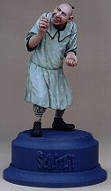
1/6 Scale, Resin
Ready to assemble
Sculpture: Mitch DeVane
Painting: Thomas Gilliland
Schlitzie was perhaps the most famous of the Sideshow pinheads at the beginning of the 20th
century. He suffered from an anomaly called 'microcephaly', a term used to describe an affliction
that reduces the cranial capacity in an individual from the normal average of 1600 cubic centimeters
to an astonishingly low 400 cubic centimeters. This severe affliction undoubtly affects the mental
capacity of the individual, limiting them to very simply tasks. Schlitzie, although a male
microcephalic, and much smarter than the average pinhead, was forced to wear a dress because his
guardian stated it was easier to take care of his toilet needs. Schlitzie charmed audiences
for over 30 years before dying at the remarkable age of 80. Schlitzie can be seen today in
Tod Brownings' film masterpiece, Freaks, with other infamous human oddities from the 1930's.

 It comes in both kit and finished - painted form.
It comes in both kit and finished - painted form.
1:4 scale.
The price is $89 us / 55 uk pounds (kit)
$179 us / 105 uk pounds (painted).
As EDEN SCULPTURES is based in the UK shipping will be at cost.
This sculpt was recently released and if the demand for JD's last
Mask figure is anything to go by, this one will be just as hot!


Sculpted by Scott Herel (his first attempt at sculpting)
Size 9.5 inches, and 25 parts
Material: Resin
Cost $75.00US $5.00 shipping
Full color box art and instructions
The kit comes with 2 optional heads, 2 optional hands and a separate
tongue.
Also included are small paper guitar pics scanned from an actual concert
pick that was given to Scott by Gene.
The Bass Guitar is a rare version of Gene's custom 1975 - 1976 design.
The model base is from the cover of the album "Rock and Roll Over"

 The kit is 1/6 scale, made of resin.
The kit is 1/6 scale, made of resin.
The cloths and cards are made of material and paper.
Price $130.00 (wholesale available)
Sculpted by E. Luis & A. Lopez
Design and painting Eli Raphael
For orders outside of Mexico, please contact our USA representative:
Puff & Stuff, 703 Lowry Ave, Jeannette PA 15644
ph (412)523-8444 or fax them at (412)523-6979

 Sculptor Randy Bowen has safely returned from a fact-finding tour on the planet
Tatooine in the Star Wars universe, where he barelyescaped death and dismemberment in
the execution pit of Jabba the Hutt while sculpting the savage Rancor monster for the second
statue in the program of ultra-limited edition Star Wars bronzes from Dark horse comics and
Bowen Designs.
Sculptor Randy Bowen has safely returned from a fact-finding tour on the planet
Tatooine in the Star Wars universe, where he barelyescaped death and dismemberment in
the execution pit of Jabba the Hutt while sculpting the savage Rancor monster for the second
statue in the program of ultra-limited edition Star Wars bronzes from Dark horse comics and
Bowen Designs.
"I have always tried to bring realism to my work," Bowen remarked, "but I never thought
it would cost me my skin. Fortunately, I was able to capture the likeness before it captured me!"
this likeness has been successfully translated into a highly detailed bronze measuring 15"
tall, weighing 25 pounds on its rich base of black Spanish marble. The edition is strictly
limited to only 50 numbered copies and is being offered at a price of $3,000.00.

Horizon introduces the newest addition to our expanding line of hobby paints & supplies.
Horizon White Primer (item #11401) is an excellent primer for vinyl model kits.
Dries in minutes! Convenient 6-ounce spray can costs $6.50. White color.

|
Horizon
releases a Fossil Reproduction Collection!
A new series of collectible dinosaur fossil reproductions. No assembly or painting required! Display stand & Nameplate included. The prices range from $55.00 to $95.00 | 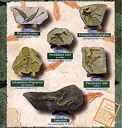 |
|
Horizon
releases Sil from Species!
Sil is the first in a new series of original statuettes. She was sculpted by Toshi Usui and designed by H.R. Giger. Stands over 12 inches tall and there is no assembly or painting required. The price is $175.00. |

|
|
Skull Island Models
releases Myths and Legends!
New from Skull Island Models comes the first kit in their "Myths and Legends" series: Pan. Pan is 1/8 scale (8 1/2" tall) and comes with signed and numbered certificate of original authenticity. Slick spin casting is done by Soldat ensuring high quality. Sculpted by Steve Goodrich, Pan has a free and easy macho image to reflect any guy's inner spirit. Yet Pan is also studly enough to appeal to the lady collectors in our hobby.
Pan is $55.00 plus $5.00 S&H and may be ordered directly from: | 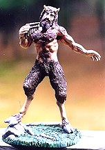 |
|
Fairbanx Models
releases
Grandpa!
Available from Bare-Metal Foil & Hobby Co. for $130 plus $5 S&H. |

|
|
Fairbanx Models
releases
2,000 Man!
Available from Bare-Metal Foil & Hobby Co. for $90 plus $5 S&H. | 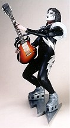 |
|
Dark Horse
releases Death Dealer!
He Brings Death on a Dark Cloud; and His Name is Vengeance: Grazetta's Death Dealer Returns! In 1994, the undisputed master of fantasy art, Frank Frazetta and premier sculptor Randy Bowen came together to create a bronze translation of Frazetta's legendary Death Dealer. Over the years, the silent, brooding character of Frazetta's legendary painting had been captured on countless publications, posters, art books, magazines, plaques, and scores of other items. It has even been adopted by the U.S. Army Tank Corp. as mascot! Finally, through this very unique collaboration between these two talented artists and Dark Horse Comics, a three-dimensional bronze sculpture of the Death Dealer was born. Limited to only 50 bronzes, it sold out immediately and is now a coveted collectors' treasure that commands fantastic prices on the high-end collector's market. With special permission granted by the Frazettas, Dark Horse Comics and Bowen Designs are producing Frank Frazett's Death Dealer as a Cold-cast, limited-edition sculpture. The fully painted, meticulously detailed sculpture stands at 13 1/2" high and sits atop a dark mahogany base and includes burnished steel chains. Though slightly different, it remains exacting in every detail, this impressive peice captures the dark mystery and veiled menace that has captivated fantasy fans and collectors worldwide. The Death Dealer is limited to 5,000 copies. Each statue is individually numbered and comes in an elegant full-color collector's box. The Death Dealer will be available December 1997 for a suggested retail price of $250.00. To preview this special project, check out the Dark Horse website: http://www.dhorse.com or the Bowen Designs website: http://www.teleport.com/~bowen8r. |
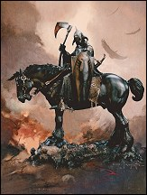 |
|
Bowen Designs, Inc.
releases Cthulhu!
Bowen Designs is proud to re-present a sculptural tour de'force from
the hand of famed science fiction / fantasy illustrator
Stephen Hickman.
Due to popular demand, Bowen Designs will be going back to the
master molds to complete the announced run of 2,000 limited edition
sculptures. Only 1,000 were originally produced. Every detail has been lovingly hand-crafted to comply
with Lovecraft's description in the classic short story... The Call of Cthulhu |
|
|
Bowen Designs, Inc.
releases The Jimmy Leggs!
Bowen Designs gives us a Pre-assembled statue and model kit by Randy Bowen! You've heard of Nyarlthotep? Yog-Sothoth? Cthulhu...? You weaklings!
October 31st, 1997. In a recent press conference, Doctor Howard Phillips of the
Spring Grove Mental Hospital issued a statement in which he declared noted
sculptor Randy Bowen legally insane. The statement came just after Bowen
attempted to prove to the world that the ancient legend of "the Jimmy Leggs" did,
in fact, exist, and that his Great Grandfather had borne witness to the strange
ritual in which the beast was summoned. Shortly after demanding a search party
be formed, Bowen ordered his now world famous company, Bowen Designs, to release
a fully detailed and meticulously - sculpted version of The Jimmy Leggs,
complete with base and a sculpted version of the "Woman from the Stars" - who
he claimes is the monster's keeper. He has made the sculpture available in two
versions: 1000 will be produced as a pre-painted sculpture, and 500 will be
unassembled model kits. |
|
|
Bowen Designs, Inc.
releases Spider-Man Bronze!
Bowen Designs is proud to announce a legendary line of highly collectible
bronze sculptures depicting the World's Greatest Comics characters.
This prestige series will commemorate these classic heroes as they were originally
created. It is inspired by the Classic Art of Steve Ditko and sculpted by Randy Bowen.
The sculptures will be limited to just 100 castings max.. After production is complete the
molds will be destroyed. The first 35 collectors to reserve their bronzes will recieve as a
premium, a cold bronze bust, depicting the character's alter ego. (Spider-Man/Peter
Parker, Hulk/Bruce Banner, Iron Man / Tony Stark, etc.) In addition, Bowen Designs will make
available to consummate collectors, a separate edition of 35 gold plated copies!
If you have any questions, with regards to reserving your bronze, please contact Bowen Designs, Inc. at 503-786-0542 |
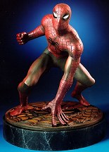 |
|
Zotz
releases Sentimental Journey!
She is a 1/3 scale, 1940's Pin-up girl bust resin kit. Sculpted by Alex Lopez,
it captures that special era in which allied servicemen all over the world
never thought their hearts could be so yearning. List price: $79.95
Wether fighting in the steaming jungle of New Guinea, flying high over Nazi-held territories, or in foxholes in dusty North Africa, they always longed for the day that would send them back to thier loved ones. For orders outside Mexico, please contact our USA distribute.
Puff & Stuff |

|

This latest kit from Mike James is a fresh
addition to his line of "girl" kits which includes:
Kiko,
Tabitha,
Bride,
Vixen,
Sedusa, and
Angelissa.
If you have seen any of these "Mike James Kits" then I'm sure
they have been toasted into your brain forever!
But the best part of Azimuth Design is Mike James. Mike does all of the
design, sculpting and casting as well as providing excellent customer service.
I don't know how he can do it, but I'm happy he does!

| Star Wars Emporium releases Game Over! This limited edition kit includes: 2 allien warriors, battling with Hicks & Hudson on a full diorama base. Game Over is solid cold cast porcelain - beware of any recasts. £130.00 Plus Postage & Packing U.K. $200.00 Plus Postage & Rest of the World. Postage to the U.S.A is £45.00 or $70.00. |

|
|
Anubis
releases Spinner!
It is 18" and was sculpted by Rick Wyatt and Dave Barkovitz.
It is cast by windshear and includes vacume dome and clear colored resin
police lights. It will be available at the end of October for
shipping and will debute at Fall Chiller Theatre. You can pre order
now and can even pick the kit up at Chiller to save shipping.
Price--$210.00 shipped |

|
|
Ziku
releases Deformed Godzilla
kit from 1954. It is $90.00 U.S. Ziku N Haitu 1F Migi 721-40, Minami nakamalu Omiya Saitama 330 Japan Fax 81-48-687-0492 |

|
The Post Office releases Monster Stamps! The Monster stamps have arrived just in time for halloween! Run out to your local post office and pick some up!
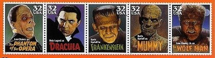
Dinosaur should be available also - artist James Gurney is responsible for these great stamps!

| Morbid Models releases Astronaut and Egg! The first kit is 1/6 scale and called "Astronaut and Egg".It depicts Kane in the space suit from Alien. He is examining the alien egg as a face hugger launches itself at his visor. UK price is £60 (which includes S&H). US price is $100 plus $20 S&H. | 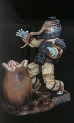 |
| Morbid Models releases Starbeast! The second kit is an original Alien creature called "Starbeast". It stands 11 inches tall and comes with a small Giger style base. Both of these kits are cast in Cold Cast Porcelain and don't need any clean up at all. UK price is £50 (which includes S&H). US price is $80 plus $10 S&H. |

|
| Monstrology Models releases "Jake", The Monstrous Blind Henchman! This kit is from the 1939 Classic "The Human Monster" sculpted by Jon Wang. Jake is a 1/6 scale resin figure kit consisting of 8 peices including base. The 1st 25 units sold will recieve a free set of Michael Price's "Hollywood Horror's" trading card set now out of print. These are among the most interesting horror Trading cards ever done. Retail Price for Jake is $115.00 plus $5.00 S+H. |

|
| Monstrology Models releases Edison Frankenstein! This is a limited run (75 units) of the Edison Franenstein sculpted by William Paquet. Retail Price is $110.00 plus $5.00 S+H. | 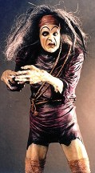 |
| Horizon releases Poison Ivy! This is a sketch of Horizon's upcoming Poison Ivy 1/8 scale model kit which was sculpted by Toshi Usui. This kit features Poison Ivy sprawled atop a mutated plant and will include a nameplate. The solid model kit version will be available in October 1997 and the vinyl version will be available by December. |

|
| Horizon releases Bat Girl! She was sculpted by Toshi Usui is 8.5 inches tall and available in both vinyl and resin. Both versions include a nameplate and small base. | 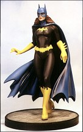 |
| Madhouse releases Priss at War! Very sexy and very sci-fi anime. The base is a battered boomer robot which she is about to behead. Priss is 1/6 scale standing approximately 11 inches tall and is a cold cast porcelain / resin model. She was sculpted by Garrett Fasano, who will be doing the rest of the characters from the hit japanamation entitled Bubble Gum Crisis. She was sculpted and produced here in the USA. |

|
| Solid Image Arts releases MJ-12 Alien Visitor! This vinyl kit is 1/4 scale - over 13 inches tall! Dan Platt meticulously created this MJ-12 Type II Visitor model kit based upon the US Military's description of a Highly Classified Type II EBE (Extraterrestrial Biological Entity) as categorized in the recently discovered MJ-12 Operations Manual. | 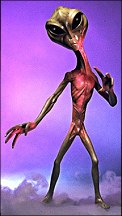 |
The Gremlins in the Garage webzine is a production of Firefly Design. If you have any questions or comments please get in touch.
Copyright © 1994-2004 Firefly Design.